Elsäkerhet och riskbedömning – steg för steg
Detta läsmaterial följer andra lektionen. Börja med fall A och bygg resonemanget från observation till åtgärd och kontroll.
Återblick: lampkretsens delar
Fotografier och förklaring av varje symbol. Läs bildguiden om begreppen batteri, brytare, last och strömväg är nya.
1. Vi börjar med det vi vet
En bärbar arbetslampa vid en gångväg på däck är ansluten till 230 V AC. Sladdens ytterhölje är sprucket. Lampan lyser. Däcket är fuktigt och personer passerar. Skadans djup, skyddens skick och matningens krets är ännu inte verifierade. En observation återger underlaget. Att sladden har klämts är en möjlig förklaring, inte en uppgift i fallet. Att alla skydd fungerar är också obelagt. Skriv uttryckligen vad som behöver klarläggas.
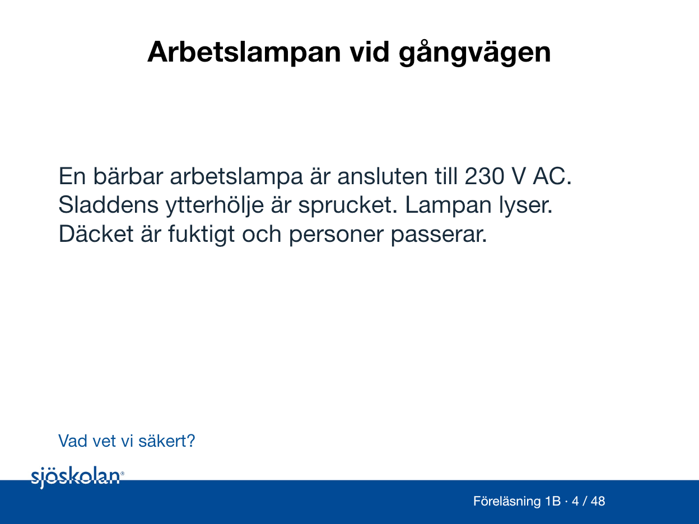
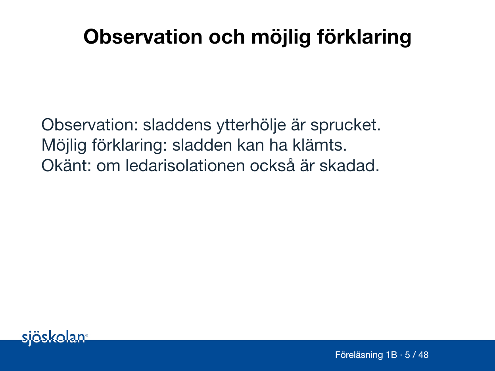
2. Funktion och skydd har olika uppgifter
En lampa kan få ström och lysa även om ett skyddande lager är skadat. Sladdens ytterhölje ger mekaniskt skydd. Isoleringen runt de metalliska ledarna skiljer ledande delar åt. Vi vet inte hur djupt skadan går. En principskiss visar funktioner, inte den aktuella lampans exakta konstruktion eller skyddsklass.
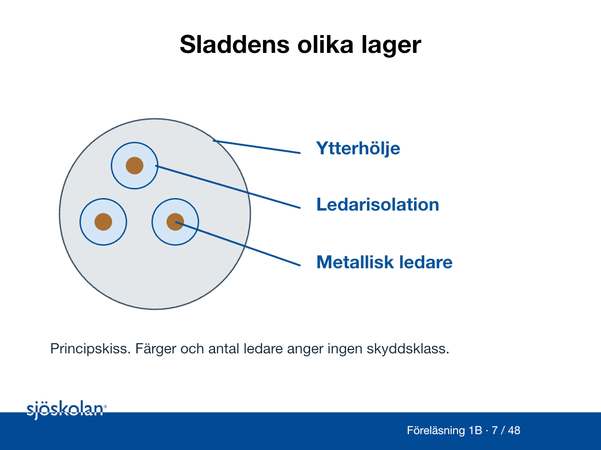
3. Hur någon kan komma till skada
En fara är en möjlig skadeorsak. Exponering beskriver hur någon kan utsättas. Riskbedömningen behöver väga hur en händelse kan inträffa och hur allvarlig följden kan bli. Strömgenomgång, lokal uppvärmning och ljusbåge är olika elektriska förlopp. Vi ska inte påstå att alla redan förekommer i lampfallet. Fukt, passage och mekanisk påverkan hjälper oss att beskriva relevanta förlopp.
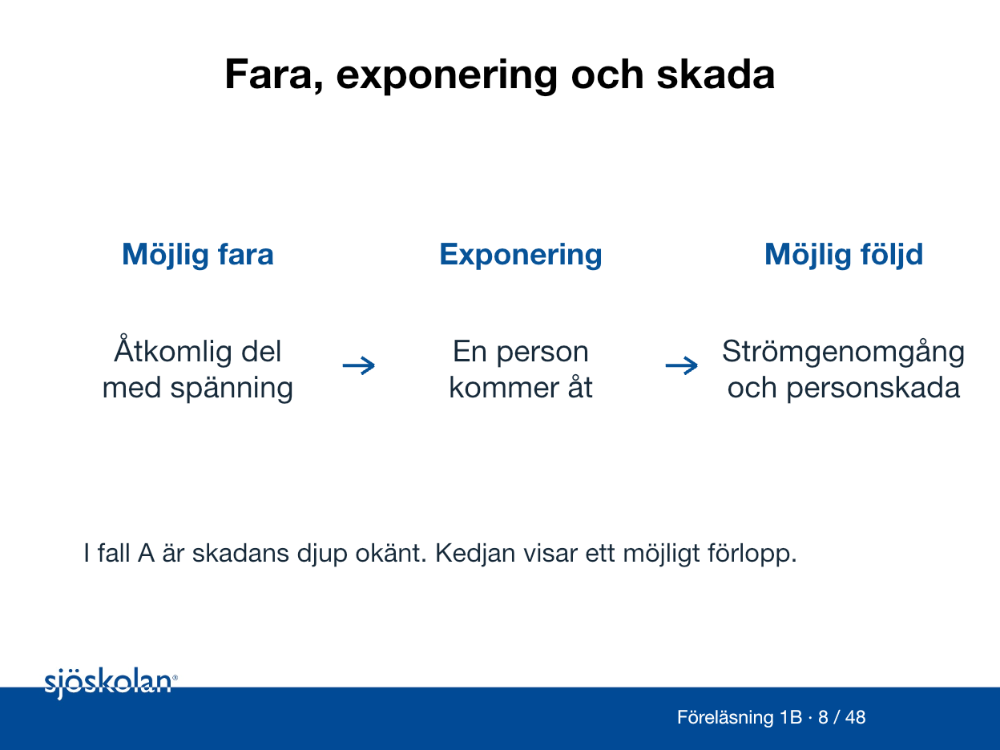
4. Det första beslutet
I fall A finns inget underlag för fortsatt användning av den skadade lampan. Användningen ska upphöra och återanvändning hindras. Den elektriska hanteringen måste ske med säker metod, rätt identifiering och relevant kompetens. En lapp eller en AV-knapp är inte i sig ett bevis på frånskiljning. Belysning och tillträde behöver samtidigt hanteras.
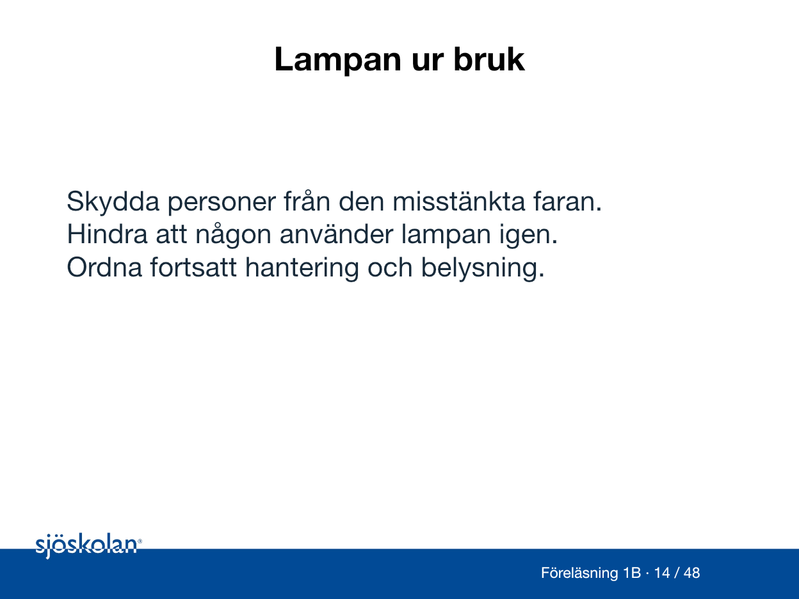
5. En riskrad behöver hänga ihop
Beskriv uppgift, plats och berörda personer. Koppla en brist till en möjlig händelse och följd. Ange åtgärd, ansvar och uppföljning. Om sannolikheten inte går att bestämma ska den inte ersättas med ett påhittat tal. En låg poäng i en riskmatris undanröjer inte tekniska brister. Använd organisationens metod i verkligt arbete.
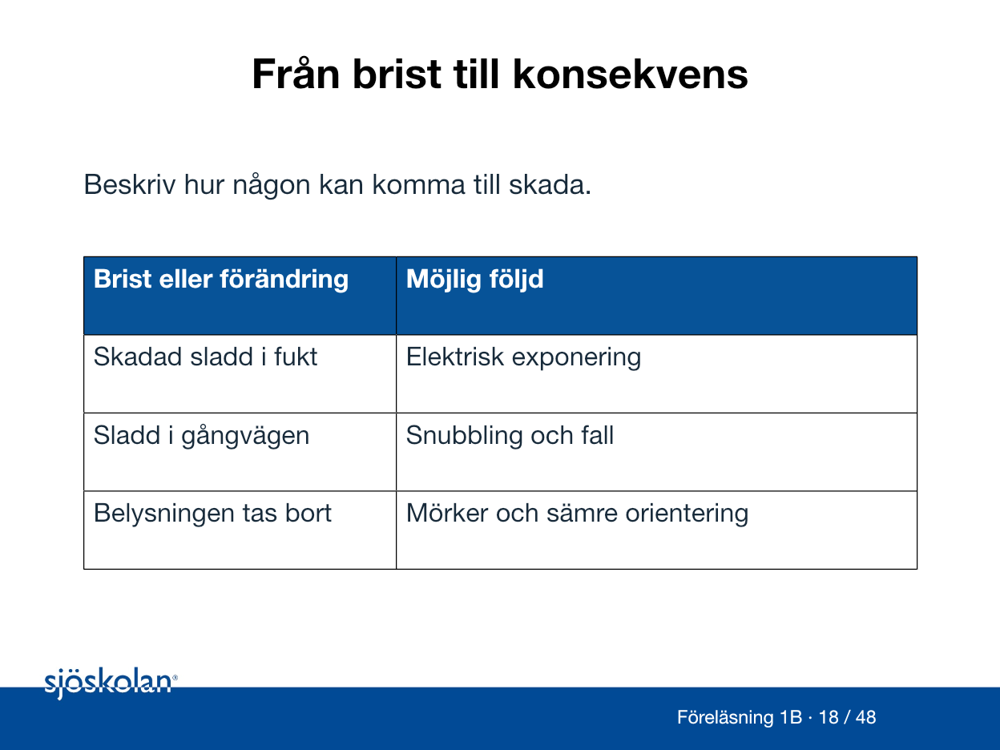
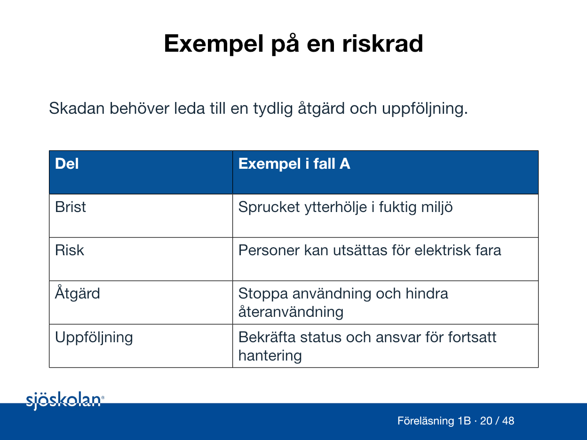
6. Åtgärden kan ändra riskbilden
När den skadade lampan tas bort kan en gångväg bli mörk. Den följden kräver också ett beslut. Tekniska och organisatoriska åtgärder behöver hantera exponeringen. Personlig skyddsutrustning väljs för aktuella risker och gör inte skadad utrustning lämplig att använda. Vanliga arbetshandskar är inget bevis på elektriskt skydd.
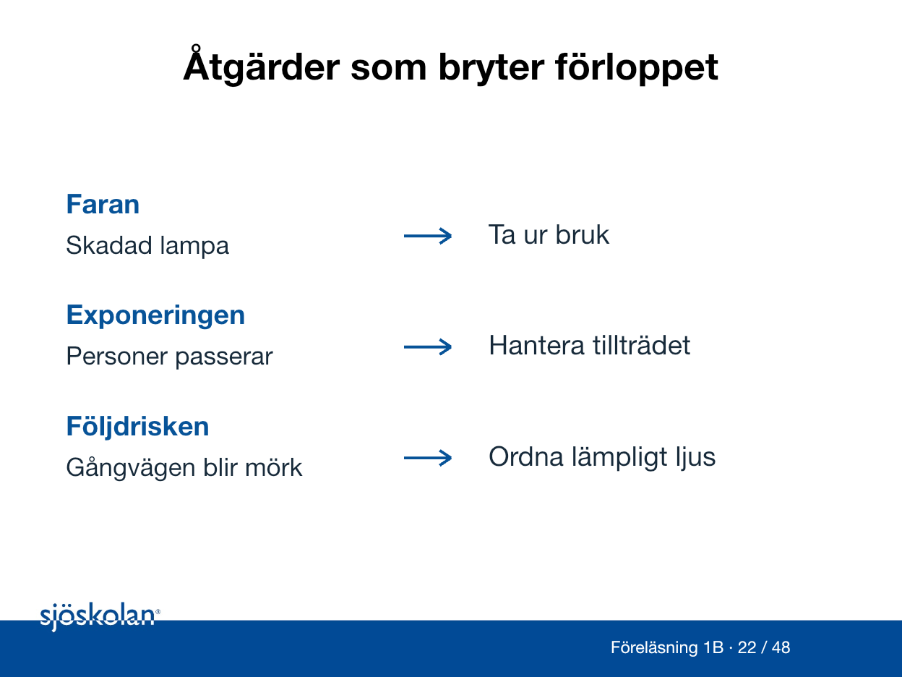
7. Tydliga uppgifter mellan människor
Den som upptäcker en brist behöver lämna ett begripligt besked. Arbetsplanering behöver rätt kompetens och underlag. Driftfunktionen samordnar påverkan på fartyget. Namnen på rollerna varierar mellan organisationer. Ange objekt, plats, observation och aktuell status, och be mottagaren återge det viktiga. En teknisk kontroll får inte beskrivas som genomförd bara för att någon planerar den.
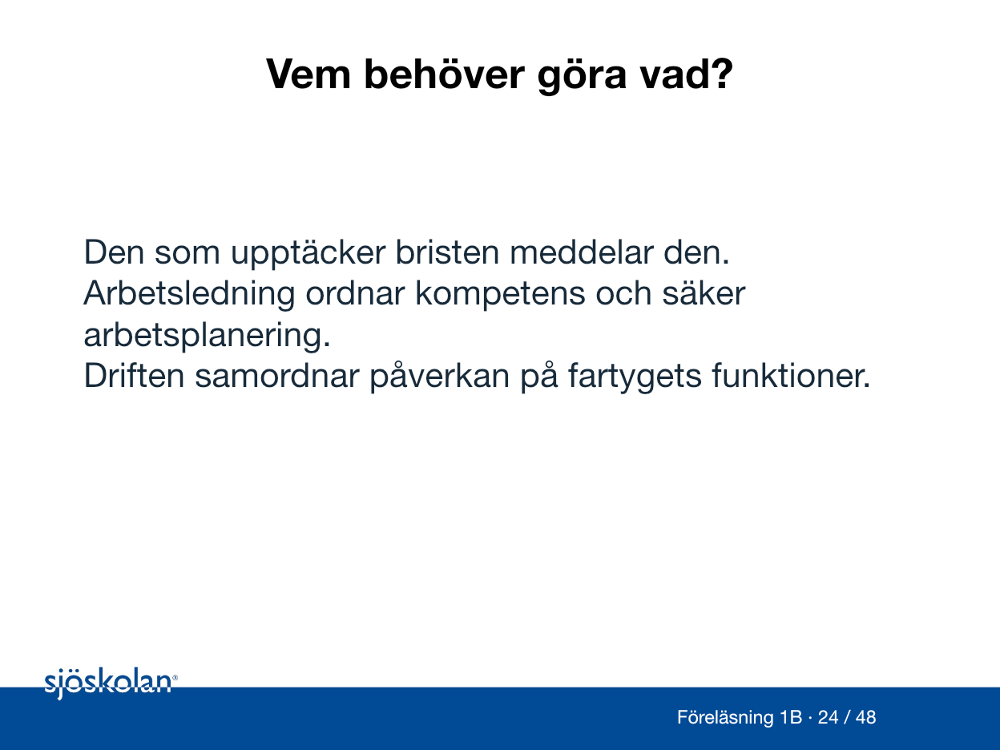
8. Samma matning kan påverka flera funktioner
Fall B bygger vidare på fall A. Den skadade lampan är nu tagen ur bruk genom säker hantering. Gångvägen behövs i ytterligare 90 minuter. Samma grupp försörjer också en pump, vars aktuella driftbehov behöver klarläggas. Lampa A kan tändas men miljölämplighet och drifttid är okända. För lampa B anger övningsunderlaget lämplighet för fallets miljö och minst två timmars drifttid i valt läge. B:s aktuella skick, laddning, placering och belysning av gångvägen ska fortfarande kontrolleras. Det är inte ett uppdrag att ändra kopplingen. Funktionsskissen visar sambandet mellan förbrukarna, inte en instruktion för frånskiljning. En pumps kritikalitet beror på dess uppgift och det aktuella driftläget.
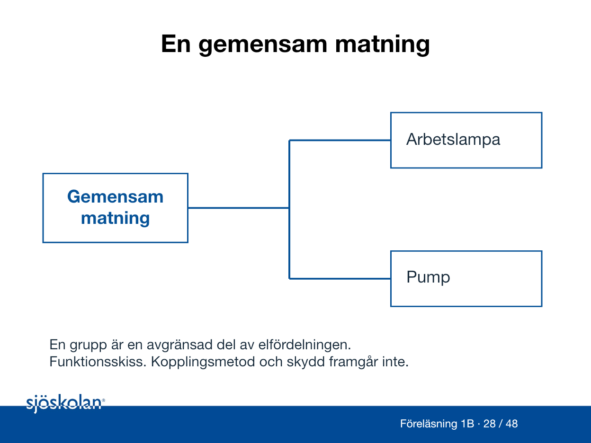
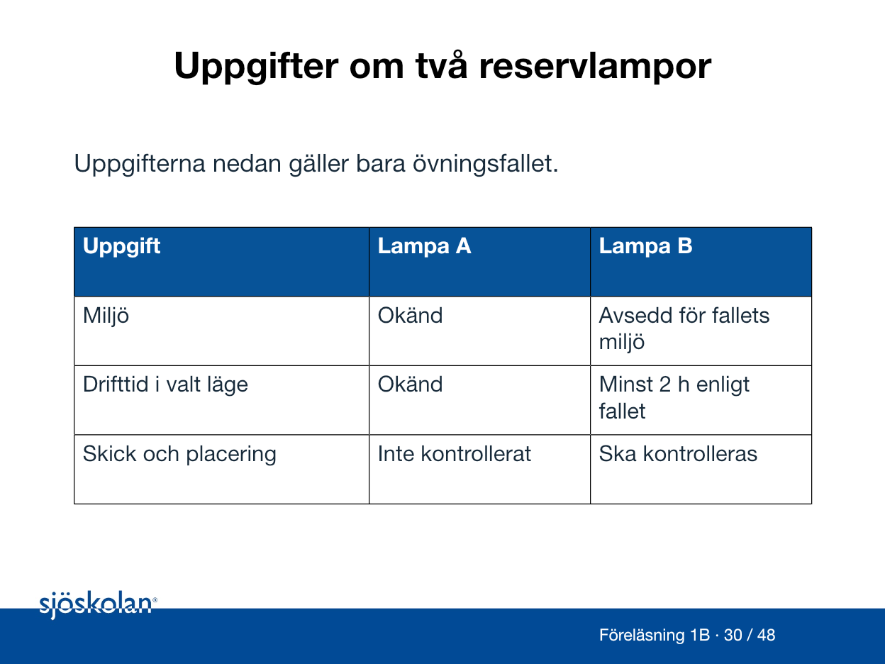
9. Tillfälligt ljus och uppföljning
En kandidat till reservlampa behöver bedömas för miljö, skick, placering, ljus och uthållighet. En ficklampa är inte automatiskt en ersättning för föreskriven nödbelysning. Ett tillfälligt beslut behöver ansvarig, tidsgräns och villkor för omprövning. När någon flyttar lampan eller mer vatten kommer in kan en tidigare kontroll behöva göras om.
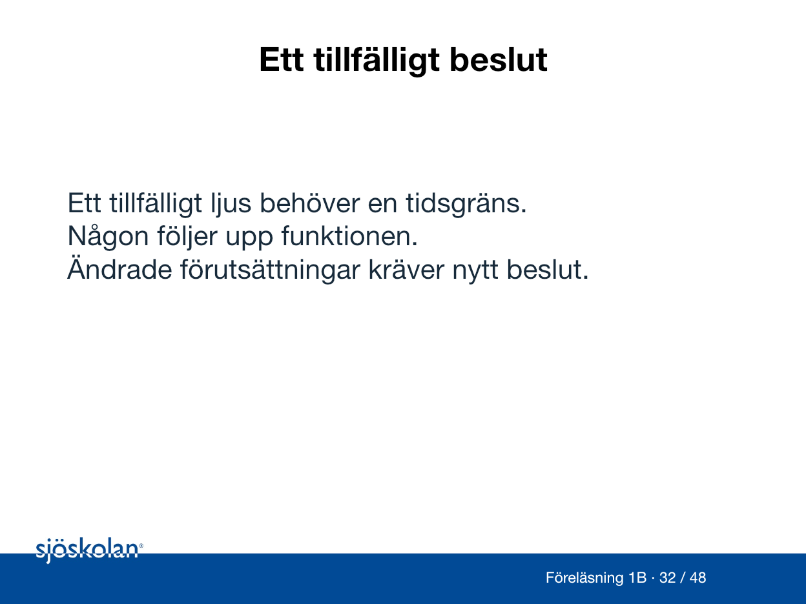
10. En rapport som går att använda
Ange rätt objekt och plats. Beskriv observation och riskförlopp. Skilj genomförd åtgärd från planerad kontroll. Dokumentera vem som ansvarar, när uppföljning sker och vad som fortfarande är osäkert. Återgång till användning kräver rätt bedömning och relevanta kontroller. Att skriva ”klart” skapar inget tekniskt bevis.
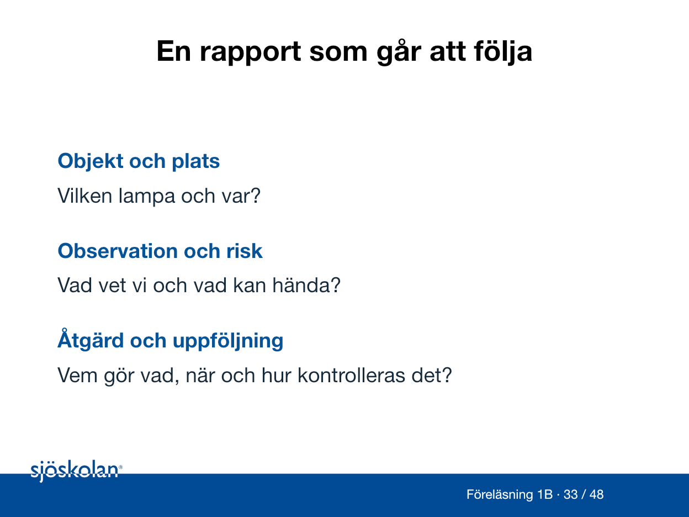
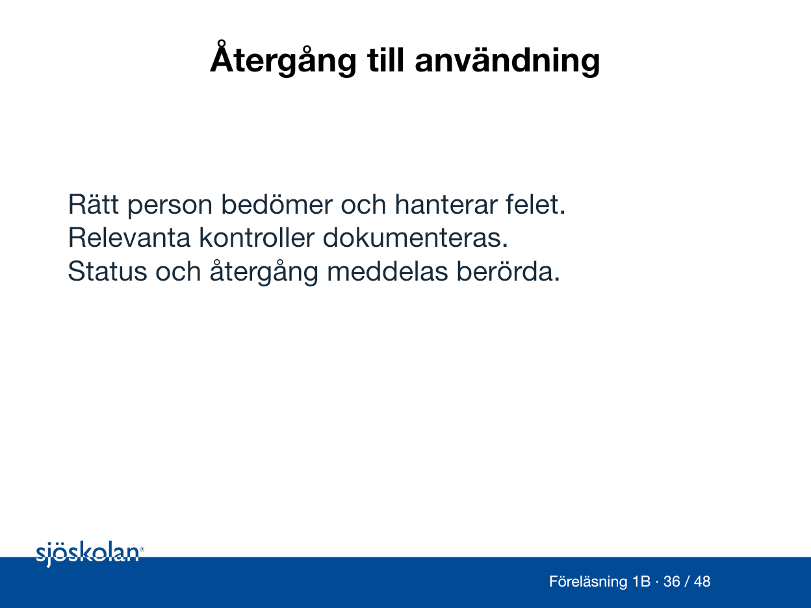
11. Om en olycka eller ett tillbud inträffar
Skydda hjälpare från den elektriska faran och larma enligt fartygets rutiner. Vid akut nödläge används 112 där kontakt är möjlig. Följ larmoperatörens och sjukvårdens anvisningar. Allvarlig elolycka eller oklart förlopp behöver skyndsam vårdbedömning. Denna teorilektion ersätter inte praktisk första hjälpen. När det akuta läget är hanterat behöver händelser och tillbud rapporteras sakligt så att brister kan åtgärdas.
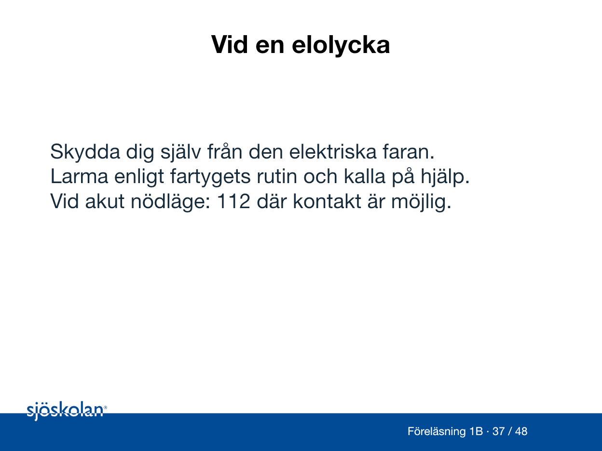
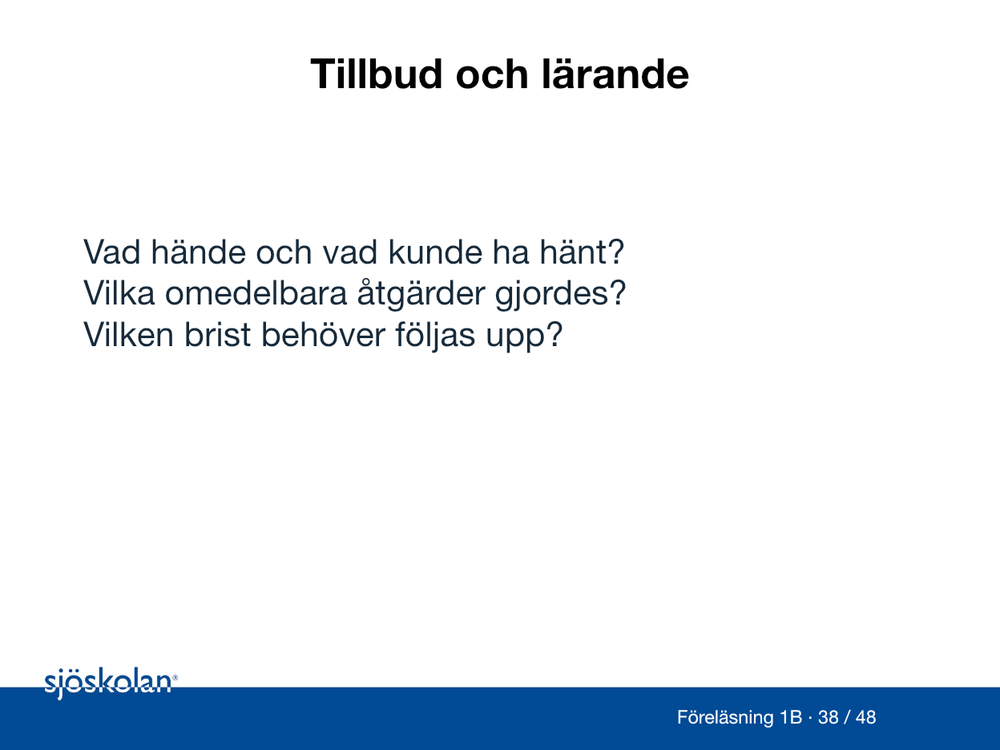
Källor och tillämpning
Myndigheternas texter ger stöd för de allmänna principerna. Fallens riskbeslut är pedagogiska tillämpningar av givna uppgifter. Tillämpliga regler och arbetsrutiner beror på det aktuella fartyget och uppgiften.
- Arbete vid risk för elektrisk fara, Elsäkerhetsverket och Arbetsmiljöverket
- Riskbedömning av arbetsmiljön, Arbetsmiljöverket
- Systematiskt arbetsmiljöarbete, Arbetsmiljöverket
- Elinstallationer på fartyg, Transportstyrelsen
- Arbetsmiljö på fartyg, TSFS 2019:56, konsoliderad utgåva
- Kontrollera dina elprodukter, Elsäkerhetsverket
- Elolyckor, 1177